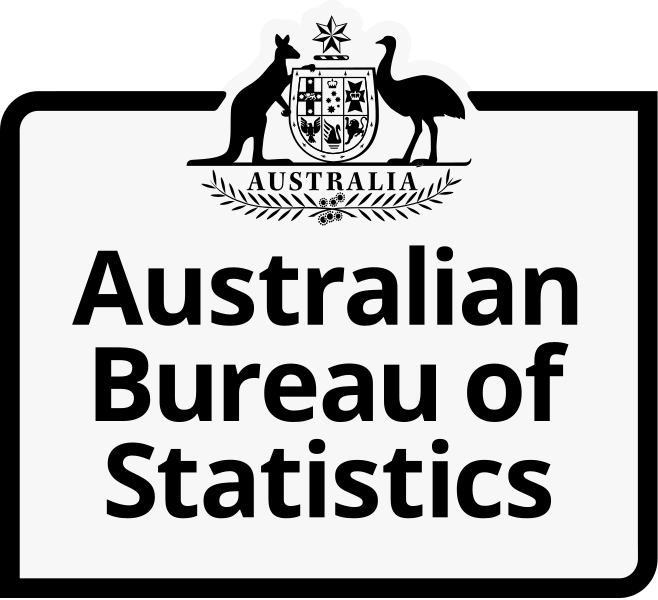
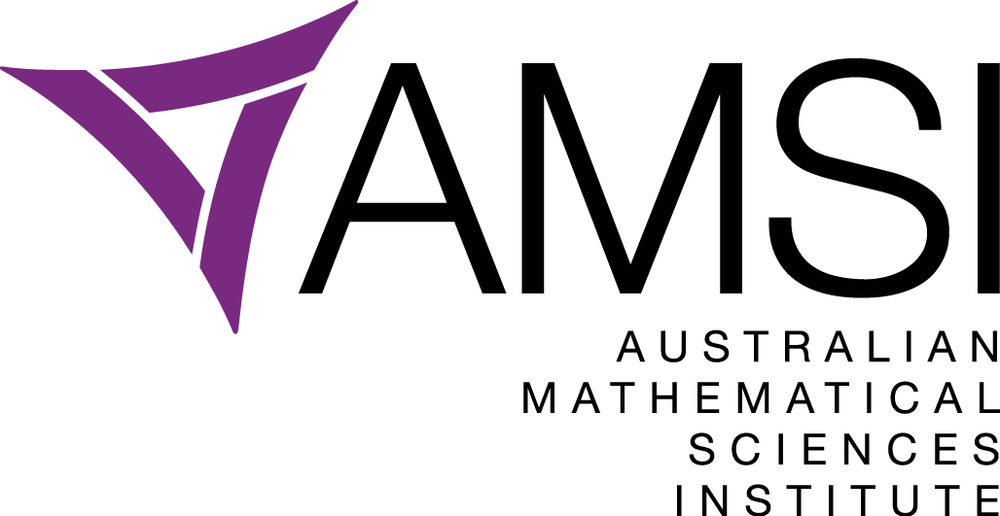
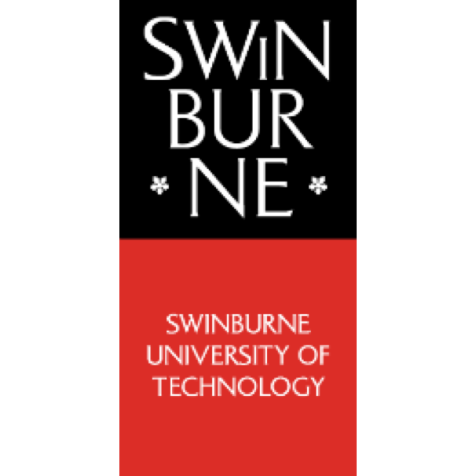
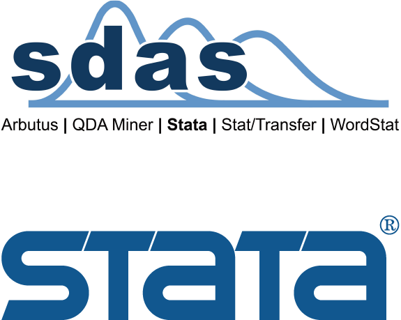

About
Young Statisticians Conference is a biennial conference for students and early career researcher in statistics sponsored by Statistical Society of Australia.

For the enjoyment of all participants of YSC2019 we expect delegates to abide by the Society’s Code of Conduct. The organisers of YSC2019 are committed to providing a conference that is welcoming and safe for all participants, is free from discrimination and harassment, where all participants are treated with dignity and respect. Please familiarise yourself with this event’s Code of Conduct.
A response team will be available at the conference, should anyone wish to report unacceptable behaviour.
Key Dates 2019
| Conference abstract submission closes | Sunday 16 June |
| Notification of conference abstract acceptance | Monday 1 July |
| Early bird registration period ends | Thursday 1 August !! Updated !! |
| Three-minute video competition submissions due | Monday 15 September |
| Conference registration closes | Tuesday 17 September |
| Pre-conference workshop | Monday 30 September |
| Trivia Night | Monday 30 September |
| Conference opens | Tuesday 1 October |
| Conference dinner | Tuesday 1 October |
| Conference closes | Wednesday 2 October |
Sponsors
-

The Australian Research Council (ARC) Centre of Excellence for Mathematical and Statistical Frontiers (ACEMS) brings together a critical mass of Australia’s best researchers in applied mathematics, statistics, mathematical physics and machine learning. The Centre brings together researchers from across Australia, engaging in research programs that combine innovative methods for the analysis of data with theoretical, methodological and computational foundations provided by advanced mathematical and statistical modelling. ACEMS aims to create world-class research at the frontiers of the mathematical sciences dealing with probability and randomness, and to translate this research into new insights that benefit society.
-

The Australian Bureau of Statistics (ABS) is Australia’s national statistical agency, providing trusted official statistics on a wide range of economic, social, population and environmental matters of importance to Australia. The role of the ABS is to provide the statistical information that Australia needs, respond to the changing information priorities of its stakeholders, enhance the ways that it interacts with its stakeholders, develop and maintain community trust, which is fundamental to its ability to collect high quality information, enable effective and safe use of its statistics, coordinate and advise official bodies on statistics, including developing, and ensuring compliance with, statistical standards, fulfil its role as an Accredited Integrating Authority, build its capacity to take advantage of opportunities, such as advances in technology, big data, and use of administrative information for statistical purposes, ensure cost-effect operations, including better use of existing information, collect information more efficiently, streamline processes, and reduce the impact on those who provide statistical information. It is the highest priority of the ABS to deliver high quality official statistics. To ensure that the ABS can deliver relevant, trusted, objective statistics, it is transforming the ABS and partnering with stakeholders to innovate, develop and implement new statistical solutions. The ABS also has an important leadership role, coordinating statistical activities and collaborating with official bodies in the collection, compilation, analysis and distribution of statistics. In addition, the ABS provides technical advice and assistance to the Australian and state and territory governments in relation to statistics, develops standards for statistics, and helps to ensure compliance with those standards. The ABS Corporate Plan, outlining the ABS purpose, strategic priorities, operating environment and performance measures, can be found on the ABS website.
-

AMSI is the collaborative enterprise of Australia’s mathematical sciences. They pursue collaboration between member orgaisations to promote mathematics in school eductaion, improve research base in Australia and strengthen the industry-university link.
-

Minitab helps companies and institutions to spot trends, solve problems and discover valuable insights in data by delivering a comprehensive and best-in-class suite of statistical analysis and process improvement tools. Combined with unparalleled ease-of-use, Minitab makes it simpler than ever to get deep insights from data. Plus, a team of highly trained data analytic experts ensure that users get the most out of their analysis, enabling them to make better, faster and more accurate decisions. With its foundations in academia, Minitab is the leading software used for statistics education at more than 4,000 colleges and universities worldwide. More students learn statistics with Minitab than with any other software. In 2017, Minitab acquired Salford Systems, a leading provider of advanced analytics which delivers a suite of powerful data mining, predictive analytics and modelling capabilities. Unlock the value of your data with Minitab. For more information visit www.minitab.com.
-

RStudio helps people understand and improve the world through data. We build tools that enable robust and reproducible data analysis through programming, paired with tools that make it easy to share insights. Our core software is open source, freely available to anyone. Our professional software equips individuals and teams to develop and share their work at scale.
-

-

Survey Design is the authorised distributor in Australia and New Zealand for Stata, Arbutus, Stat/Transfer, QDA Miner and WordStat software. They provide data-based research software for researchers, educators, students and analysts to solve data based questions.
-
UniBank is a member owned mutual bank who offer a range of personal banking and services to people working and studying in tertiary and post-secondary qualifications. Founded in 1964, they continued to ensure their members to have a brighter future.
-
UniSuper manages $70+ billion in net funds for over 400,000 members include students and researchers. UniSuper is the super fund dedicated to people working in Australia's higher education and research sector.
You can sponsor our future statisticans! Click here to see how to sponsor YSC 2019.
Keynote Speakers
-

Teresa Dickinson
Deputy Australian Statistician, Australian Bureau of Statistics
Teresa Dickinson is the Deputy Australian Statistician leading the Census & Data Services Group. The Census & Data Services Group is responsible for collecting the data the ABS uses in its work and disseminating the official statistics, data and insights it produces to inform Australia's important decisions. The Group provides statistical infrastructure to support work of the ABS and leads its work to expand and improve data sharing, data integration and microdata access across government. It also leads planning underway for the 2021 Census. Teresa joined the ABS in April 2018 after four years as a Deputy Government Statistician and Deputy Chief Executive at Statistics New Zealand. At Stats NZ she held a variety of roles, including leading their transformation program, providing statistical infrastructure and – most recently - leading data collection and production of official statistics and insights across economic, social and environmental statistics. This included responsibility for leading their 2018 Census, which was undertaken in March. During a career spanning 30 years, Teresa has worked in a wide range of statistical and data roles in the public sector including Commonwealth Government (AIHW and ABS previously), Victorian State Government and scientific research (CSIRO). She has over 15 years’ experience at senior executive levels. Teresa holds Master of Statistics and a Master of Business Administration degrees. She is a University Medallist and Accredited Statistician with the Statistical Society of Australia.
-

Dr Margarita Moreno-Betancur
Senior Research Fellow, VicBiostat
Dr Moreno-Betancur is a Senior Research Fellow in Biostatistics and part of the management team of the Victorian Centre for Biostatistics (ViCBiostat), a collaboration of researchers across three institutions (Murdoch Children’s Research Institute, The University of Melbourne and Monash University). After a BSc in Pure Mathematics at Universidad de los Andes (Bogota) and an MSc in Statistics at Université Pierre et Marie Curie (Paris), Dr Moreno-Betancur obtained a PhD in Biostatistics from Université Paris-Sud (Paris). Prior to arriving in Melbourne, she held a postdoctoral role at the French Epidemiology Centre on Medical Causes of Death (Inserm CépiDc). Her research concerns the development of statistical methods for the analysis of clinical and population health studies, with focus on the areas of survival analysis, causal inference and missing data. Her work is strongly motivated by analytical issues arising in studies on which she collaborates, particularly in child and adolescent health.
-

Dr Alison Presmanes Hill
Data Scientist & Professional Educator, RStudio
Alison Hill is a Data Scientist & Professional Educator at RStudio, developing free and open source tools to make it easier and more fun to do data science with the statistical programming language. Alison studied psychology and quantitative methods, receiving her Ph.D. from Vanderbilt University in 2008. For eight years, she was a professor and scientist at Oregon Health & Science University, where her research was funded by the National Institutes of Health, the Oregon Clinical and Translational Research Institute, and Autism Speaks. She has written numerous scientific journal articles and book chapters on autism and neurodevelopmental disorders. She has developed and delivered workshops, graduate-level courses, and curricula based on teaching R, the tidyverse, and literate programming.
Workshop
Workshop 1: Communicating with R Markdown
About the workshop
A workshop for R Markdown users who want to get more out of R Markdown (and friends). In this workshop, we will demystify how R Markdown works under the hood. You will learn practical tools and workflows to increase your efficiency and productivity using R Markdown (including RStudio IDE features and templates), while learning how to use some extension packages along the way. We assume that you have knit an R Markdown document before, but you don’t need to be an advanced R Markdown user to take this workshop.
About the presenter
Alison Hill is a Data Scientist & Professional Educator at RStudio, developing free and open source tools to make it easier and more fun to do data science with the statistical programming language. Alison studied psychology and quantitative methods, receiving her Ph.D. from Vanderbilt University in 2008. For eight years, she was a professor and scientist at Oregon Health & Science University, where her research was funded by the National Institutes of Health, the Oregon Clinical and Translational Research Institute, and Autism Speaks. She has written numerous scientific journal articles and book chapters on autism and neurodevelopmental disorders. She has developed and delivered workshops, graduate-level courses, and curricula based on teaching R, the tidyverse, and literate programming.
Workshop 2: Maximising the use of Australian Bureau of Statistics Data Products and Analysis Tools
About the workshop
This one-day workshop will have two components. First, it will provide an overview of the wide variety of data sources from the Australian Bureau of Statistics that are available for analysts. These sources include our 5-yearly Census, survey data, administrative data, and in particular, linked data. A demonstration of the ABS Table Builder and Data Lab products - platforms for analysts to remotely undertake bespoke analyses using ABS data - will be given. Several case studies will provide examples of the many innovative ways analysts are making use of ABS data for their projects. Second, it will focus on how Table Builder can produce data-cubes for a standard analysis in R. This will then extend to creating large data- cubes suitable for mixed models using the ‘LME4’ package in R. This second component of the workshop will conclude with discussion of Poisson-gamma models, which have additional advantages in this type of data framework.
About the presenters
Louise Gates has over 20 years' experience as a statistical methodologist at the Australian Bureau of Statistics, and is currently the Director of the Health National Statistics Centre at the Australian Bureau of Statistics. The Centre leads the production of national official health statistics and data products. When Louise is not at the ABS or raising her three teenage children, you'll most likely find her off the beaten track running, white water kayaking, or bushwalking.
James Brown has over 20 years of experience as an applied statistician including collaborations with Government Statistics in the UK and Australia. Since September 2013, he is Professor of Official Statistics at UTS and just completed a term as Associate Head of School (Research) for School of Mathematical & Physical Sciences.
Video Competition
To join the competition, you only need to present your research in a three-minute video and submit the link through the registration form. We would like to make the submitted video public so you can also watch other participants’ video, after the competition. How exciting!
The competition is a great opportunity for you to:
- - practice your communication skill in explaining your scientific research/ project in a concise and compelling way to general public,
- - develop your research to the next stage for broader community impact and network,
- - inspire many early career statisticians or students about career paths in statistics/ science.
Key dates:
Submission deadline: 15 September 2019 at 11:59 PM Canberra Time
You are welcome to submit your video after this due to have your video be posted in our YouTube account; however, only videos submitted by the submission deadline will be included in the competition.
Result announcement: 2 October 2019 (last day of conference)
Fee: It is free for everyone!
Rules:
- - You must be a student or an early career researcher (within 5 years of graduation) in a statistics related area. Previous winner are not allowed to register.
- - One participant can submit only one video. You may present your thesis, dissertation, or other substantial research project.
- - Video length is limited to 1-3 minutes. Any video over 3 minutes will be automatically disqualified.
- - Video must not have any slides, props or additional media (music, subtitles etc.)
- - The language of the video must be English; Presentations are to be spoken word (no songs or poems are allowed)
Submission:
- - Record yourself within 3 minutes in a video and upload it to your YouTube account with the privacy setting as ‘Unlisted’ or ‘Public’.
- - Put your name and research title in the ‘Title’ section and also put “YSC 2019 Video Competition” in the ‘Description’ section of the video.
- - Fill the competition registration form here (https://form.jotform.co/82995720203862) which includes:
- - link to your video
- - university/college/organisation that you represent
- - brief summary of your video (no more than 150 words)
Video publication:
All submitted videos will be posted on Statistical Society Australia/YSC2019 official website, Facebook, Twitter, and YouTube accounts (unless indicated ‘no’ in the submission form). This will not affect competition eligibility and judgement.
Judging criteria:
- - Organization: Was the presentation well-structured and easy to follow?
- - Engagement & delivery: Did the presentation make audience want to know more? Did the presenter show enthusiasm? Did presenter maintain proper eye contact, steady pace, clear voice range, and confident stance?
- - Comprehension & content: Did the presentation show an adequate elaboration of the research main components including background, research question and its significance, method, and findings? Did the presentation avoid too much use of technical terms and jargons?
- - Video quality: Was the voice is clear and no distractive noise from surrounding? Was the video-recording quality good enough?
Award:
There will be cash prizes for winners!
First prize: $200
Second prize: $100
Questions:
Please feel free to direct any enquiries to Ratih Putri Pertiwi pertiwir (at) student.unimelb.edu.au
2017 winners:
First prize: Kate Saunders, University of Melbourne (Title: Preparing for the worst: Modelling extreme rainfall)
Accomodation
Meanwhile, we have an exclusive offer for our delegates for the special rate of $165 (instead of $175) at the Forrest Hotel and Apartments is 11 minutes walking distance from Manuka Oval. More information are available at admin@forresthotel.com or https://www.forresthotel.com/.
Delegates are also entitled to 10% discount at the East Hotel, 7 minutes walking distance from Manuka Oval. Registered delegates please contact eo(at)statsoc.org.au for the promo code. More information of the hotel is in www.easthotel.com.au.
About Canberra
Floriade
YSC2019 is timed perfectly so that delegates have the opportunity to experience Australia’s biggest celebration of spring: Floriade. This iconic Canberra event will run from Saturday 14 September until Sunday 13 October 2019. Floriade is more than thousands of flowers. Click here to see what it’s all about: https://floriadeaustralia.com/event-info/How to get to Canberra
There are frequent domestic flights from major Australian capital cities to Canberra. It is only an easy three-hour drive from Sydney and an eight-hour drive from Melbourne. There are plenty of scenic routes if you like to get off the beaten track and visit one of the many country towns along the way. To find out more about Canberra, follow these links: https://visitcanberra.com.au/ https://www.australia.com/en/places/canberra-and-surrounds/guide-to-canberra.html To get a first impression, why not check out this latest episode of “Travel Guides”. It’s now available on Channel Nine: https://www.9now.com.au/travel-guides/season-3/episode-9.Contact Us
Marie-Louise Rankin: eo (at) statsoc.org.au
Organising Committee
| Raaj Kishore Biswas | Chair |
| Philip Clare | Program Chair |
| Janan Arslan | Committee Secretary |
| Myra McGuinness | Co-Abstract Submissions Manager |
| Jemisha Apajee | Co-Abstract Submissions Manager |
| Emi Tanaka | Website Manager |
| John Yeung | Assistant Website Manager |
| Kylie-Ann Mallitt | Social Media Manager |
| Sharmala (Sharm) Thuraisingam | Sponsorship Manager |
| Nidhi Menon | Venue Liaison/Local Contact |
| Ratih Putri Pertiwi | Social Program Manager |
| Armin Pourkhanali | Treasurer |
| Marie-Louise Rankin | Executive Officer |
Look back at YSC2017


Conference Dinner
The cost for the dinner is $20 for delegates of YSC2019 and $40 for everyone else.
Registrations for this dinner close strictly on 24 September 2019.